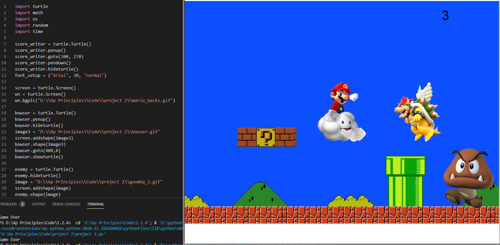
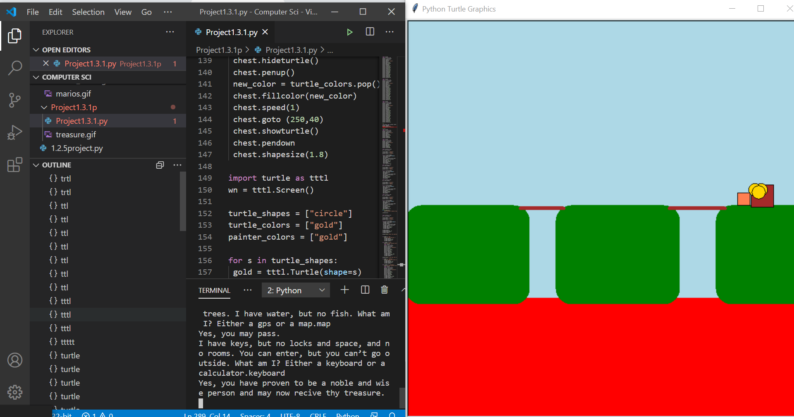

Jaethan's Portfolio
Project #1 Bugs on a Flower
 In this project, my group and I designed a flower with bugs interacting with it. First we made painter draw the flower and create the background. For the background we created grass and a sky with clouds. Then we created three bugs that have different colors and made the bugs climed up the flower. When each bug climbs up the flower it will change the color of the outer petals to the exact same color as the bug. After the bug changes the color the bug leaves and then another bug comes. The process then repeats until all the bugs pass.
In this project, my group and I designed a flower with bugs interacting with it. First we made painter draw the flower and create the background. For the background we created grass and a sky with clouds. Then we created three bugs that have different colors and made the bugs climed up the flower. When each bug climbs up the flower it will change the color of the outer petals to the exact same color as the bug. After the bug changes the color the bug leaves and then another bug comes. The process then repeats until all the bugs pass.
Project #2 Mario Game

In my second project we designed a fairly simple game that tries to replicate the Mario games. The main ojective of the game is to eliminated the goombas, evil mushrooms, and avoid dying from a flying Bowser. As you kill a goomba your score displays on the top right corner. We used a similar code as the previous leadership board code and made it to after you kill a goomba you recieve score. Again the game ends when you touch Bowser.
Project #3 Riddled Treasure

In this project we were assigned to take what we've learned from all of unit one into piece. Our project is a interactive story game where the user types in the answers to decide the fate of the character in the game. The game is about a person trying to get the treasure on the other side and order to that they have to cross these bridges. When you come about the bridge, you have to answer the riddle that's given to you. If answered incorrectly, the bridge disappears and you lose the game. The whole game is depeneded on if statements and has user input. The player needs to input the answer in the terminal in order for them to get their results. For the background/layout, we used python to draw it. The game runs smoothly and does it's job.
Project #4 Search for Gandalf
Game
In this scratch program game, we made a dialogue adventure game called Search for Gandalf. In this game, you play as Mr. Dunlea and you go on a quest to find his missing bird, Gandalf, with your side kick Doggo. In this game we start off with some story telling, for this, we used the dialogue block on scratch and made the characters talk when clicked. For the action parts, we have Dunlea go through obstacles to get to Gandalf. It's similar to a parkour game. We have Dunlea move using the arrow keys and when he jumps gravity moves him down. At the end of the game, Gandalf gives you a special shirt for you to wear.